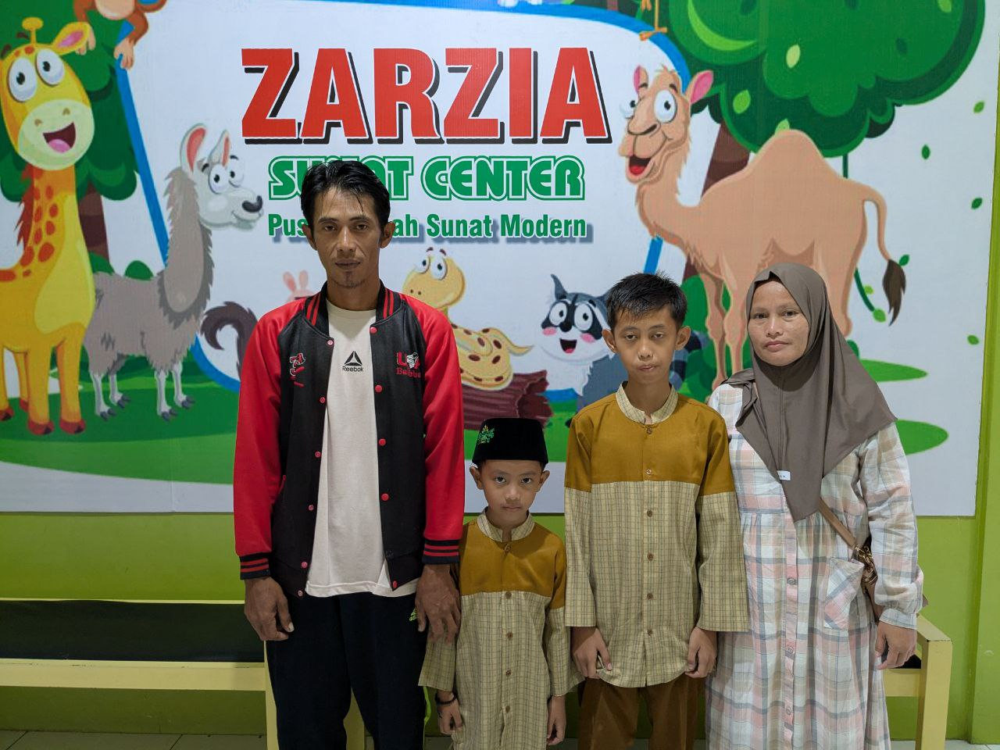
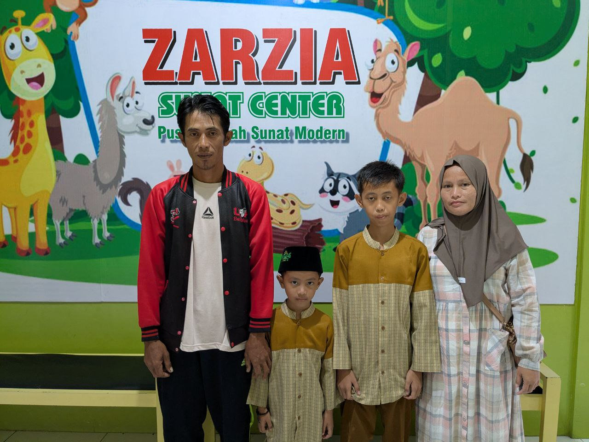

Keamanan Utama
Tim medis bersertifikasi dan peralatan steril dengan metode sunat terbaik
- Peralatan Modern
- Lingkungan Steril
- Staf Ahli

Layanan Kami
Perawatan Bayi
Prosedur yang aman dan lembut untuk bayi menggunakan teknik modern.
Perawatan Profesional
Perawatan medis ahli dengan rencana pengobatan yang dipersonalisasi.
Konsultasi
Konsultasi ramah untuk menjawab semua kekhawatiran dan pertanyaan Anda.
Perawatan Pasca Sunat
Panduan perawatan lengkap dan dukungan selama pemulihan.
Galeri
Pahlawan kecil kita minggu ini
 


Kami cermat memilih metode paling aman dan nyaman untuk anak.
Ayah Bunda bisa berkonsultasi dengan praktisi terlebih dahulu. Kami dapat membantu.
KonsultasiSuper Lem
Super Lem adalah metode sunat modern yang menggunakan circle clamp untuk hasil presisi dan rapi, melindungi glans penis dari cedera. Kulit preputium dipotong dengan Electro Surgery Unit, lalu direkatkan menggunakan lem bedah khusus.
Super Ring
Super Ring adalah metode sunat modern menggunakan cincin steril sekali pakai yang dipasang antara glans penis dan diikat sesuai SOP. Kulit preputium dirapikan dengan Electro Surgery Unit, dan cincin akan lepas sendiri dalam 7-12 hari.
Laser
Sunat Laser adalah metode sunat yang menggunakan flash cauter untuk pemotongan kulup penis kemudian dilakukan penjahitan di beberapa titik untuk mengontrol pendarahan
Konvensional
Metode lama yang digunakan zaman dahulu.
Tentang Sunat Ultra
zarzia sunat modern kini menjadi Sunat Ultra happy and fun.
Di Sunat Ultra, kami percaya dalam membuat pengalaman sunat senyaman dan sebebas mungkin dari stres. Tim profesional berpengalaman kami memberikan perawatan dalam lingkungan yang ramah anak dengan fokus pada layanan yang nyaman dan menyenangkan.
Pertanyaan Umum
Pertanyaan yang Sering ditanyakan
Berapa usia terbaik?
Meskipun prosedur dapat dilakukan pada usia berapa pun, paling nyaman dilakukan saat masih bayi. Kami menyediakan prosedur yang aman untuk semua usia.
Berapa lama masa pemulihan?
Waktu pemulihan bervariasi berdasarkan usia. Biasanya, penyembuhan membutuhkan 1-2 minggu untuk bayi dan 2-3 minggu untuk anak anak. untuk sunat modern meskipun luka belum sepenuhnya sembuh anak atau pasien dapat berkaktifitas seperti biasa
Apakah sakit?
Kami menggunakan teknik manajemen nyeri modern untuk memastikan kenyamanan maksimal selama dan setelah prosedur.
Perawatan apa yang diperlukan setelahnya?
Kami memberikan instruksi perawatan lengkap dan dukungan selama proses penyembuhan.
Temukan Kami Di Sini
Hubungi Kami
Telepon: +6285 777 111 597
Email: sunat.ultra@gmail.com
Alamat: Jl. Lokasana Dusun kujang RT02/RW01 Desa Kujang Kecamatan Cikoneng, Kabupaten Ciamis 46261